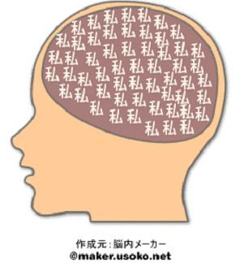

Life
AIに記事書かせてみたよ
AIに記事を書かせたら、8割が哲学で2割が唐揚げ棒になった。人間とAIのちょうどいい共著スタイルを探る回。
開発・デザイン・日常——思ったことをそのまま書いていく場所。
AIに記事を書かせたら、8割が哲学で2割が唐揚げ棒になった。人間とAIのちょうどいい共著スタイルを探る回。
AIに記事を書かせたら、急に哲学と唐揚げ棒が同時発生。最終的に人間が笑いながら整える話。

ゲロ派とゲボ派の境界線はどこか。発音・イメージ・不快度を真剣に検証してみた。

「脳裏に焼き付いている」はわかる。でも「脳裏から焼き消すぞ」といわれたらどういう反応をすればいいのか。

歯医者のテレビでオフロスキーのミュージカルが流れていた。10年の時を経ても変わらない彼に感動した。

日本人はこれを謙虚と呼ぶ。だがパッシブだと思うけどな！斜めからの視点で語ります。

新時代の休憩地点はすでにあなたが持ち得ているものです。そう、頭。頭皮マッサージの良さと3つのポイントを伝えたい。

今まさに自分を世界に表現できているという感じがして、言葉を書くのは本当に楽しいです。